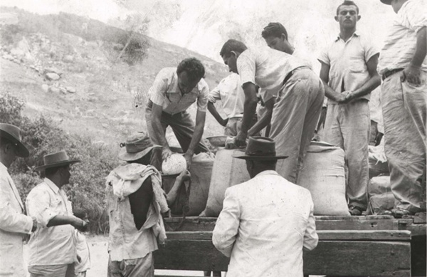

Diáspora Nordestina
Uma análise sobre os processos históricos, sociais e culturais sobre a diáspora nordestina.
Sem a devida importância por parte do poder central em relação à região nordeste, as intensas secas e a falta de industrialização fizeram com que os nordestinos migrassem para as mais diversas regiões do país. A Diáspora Nordestina é um tema de grande importância histórica e cultural. Ocorrida durante os séculos XIX e XX, foi um grande período de desafios e dificuldades inimagináveis para o povo nordestino. Sua resiliência às adversidades e, em meio aos descasos, tem fomentado uma ampla gama de estudos sobre a diáspora.

Além das secas e dos problemas socioeconômicos enfrentados pelos nordestinos, a rápida industrialização desorganizada de outras regiões, em detrimento de uma política neocolonialista desfavorável ao nordeste, resultou em uma onda de migração desenfreada para as regiões centro-sul e amazônicas. Isso fez com que o Nordeste perdesse mão de obra, acarretando desinvestimento na região em favor de outras regiões que eram favorecidas.
A grande seca de 1877-1879 no Nordeste, que dizimou milhares de nordestinos, e a política do café com leite de 1898-1930 tiveram grandes contribuições para o fluxo de migração nordestino. Além disso, durante o ciclo da borracha, os nordestinos tiveram um papel importantíssimo na construção de Brasília, não apenas como mão de obra barata, mas também fornecendo grandes quantidades de recursos comercializados a preços abaixo do mercado.
“A cultura regional permanece como um dos principais elementos de preservação da memória histórica coletiva.”
Apesar da complexidade da diáspora e da ocultação de fatos pelo governo central, a diáspora nordestina não apenas foi importante para o desenvolvimento do Brasil em meio a eventos trágicos, mas também contribuiu grandemente para uma herança cultural majestosa, incluindo música, dança, arte, culinária, literatura, festas e tradições.
O fenômeno da diáspora - palavra de origem grega que significa “dispersão” - designa o deslocamento incentivado ou forçado de populações de um dado território para outras áreas. Em termos gerais, pode indicar a dispersão de qualquer etnia ou nação para qualquer região.
As diásporas têm ocorrido de maneira relativamente frequente. Entre as mais recentes, podem ser mencionadas, a chinesa, com 40 milhões [1] , a indiana, com 27 milhões [2] , e a italiana, com 13 milhões [3] , entre outras.
Cumpre ressaltar, que há uma estimativa que entre 1500 e 1900, cerca de 23 milhões de habitantes da África Subsaariana foram levados dos seus locais de origem para outros continentes [4] .
Na América Portuguesa, a diáspora que mais chama a atenção é, sem dúvida, a nordestina. Tal evento observado com maior ênfase a partir da grande seca de 1877, quando um número significativo de migrantes segue para a Amazônia, atraídos pelo “Primeiro Ciclo da Borracha”. Sendo a República Federativa do Brasil, considerado um país periférico, caracteriza-se pela concentração das atividades tecnológicas e industriais em determinadas regiões do seu território.
Alguns estudiosos atribuem o êxodo nordestino tão somente a fatores climáticos ou à pobreza que assolava boa parte da população local. No entanto, a explicação transcende esses dois fatores.
Se o fator climático fosse um impedimento ao progresso, a Austrália, o Canadá e Israel, por exemplo, seriam muito menos desenvolvidos que o Nordeste.
Deve-se levar em conta, em especial, o processo de neocolonialismo interno que teve lugar não apenas durante o período colonial, bem como no imperial e no republicano. Tal fato implicou na concentração dos investimentos públicos e privados notadamente na região Sudeste da Federação Brasileira.
Vale a pena dizer que o Nordeste antes da década de 1960 possuía uma balança comercial externa superavitária e apresentava um déficit nas relações comerciais em relação ao Centro-Sul.
A política econômica da Federação Brasileira subsidiava a indústria em detrimento do setor agroexportador e existiam taxas diferenciadas de câmbio para importação de bens de consumo e de bens de capital.
Este era o modo encontrado para se reservarem as divisas externas da República Brasileira para que se aparelhasse a indústria e criasse um mercado interno para as empresas do Centro-Sul. Sendo assim, o governo central ao manter as taxas de câmbio supervalorizadas impunha uma política que alcançava negativamente o Nordeste, uma vez que os ganhos com os produtos agrícolas eram atingidos pelos confiscos cambiais.
Essa situação levou à transferência de renda não apenas do setor agrícola para o industrial, mas também do Nordeste para o Centro-Sul.
Não tendo condições de recorrer às manufaturas importadas, o Nordeste tornou-se um mercado cativo do Centro-Sul, transferindo nada menos que 40% de suas divisas [5] . Segundo o Banco do Nordeste, a balança comercial nordestina, no período 2010-2017 [6] , era deficitária, o que comprova cabalmente que a política econômica levada a efeito pelo governo central desde décadas anteriores foi extremamente nociva ao Nordeste.
A diáspora nordestina tem seu apogeu entre as décadas de 1950 e 1970, quando milhões de nordestinos migraram notadamente para São Paulo e Rio de Janeiro. Esse período corresponde à implementação dessa política econômica totalmente deletéria ao Nordeste.
Em 1872 [7] , os nordestinos representavam cerca de 46% da população brasileira, ao passo que em 2022 constituíam apenas 27% desse total. Isso claramente revela o descaso em que o poder central trata o Nordeste.
Para se ter uma ideia, entre 1940 e 1980, cerca de 7,9 milhões de nordestinos haviam deixado o seu território. Em 1991, 7,5 milhões residiam fora do Nordeste (aproximadamente 22% da população regional) [8] . Em 2010, esse número havia subido para 9,5 milhões (correspondente a 28% da população da região) [9] .
Tais dados revelam que em um período de 70 anos tivemos quase 25 milhões de nordestinos que migraram para outros pontos da América Portuguesa. Tal informação demonstra que o total de pessoas que saiu da África Subsaariana em cinco séculos foi suplantado em somente sete décadas pela diáspora nordestina.
Referências
- [1] FLEISCHER, Friederike, A diáspora chinesa: uma aproximação à migração chinesa na Colômbia, rev.estud.soc. [online], 2012, n.42, pp.71-79. ISSN 0123-885X. ↩
- [2] OLIVEIRA, Mirian Santos Ribeiro de. Segrillo, Angelo & Pennaforte, Charles (eds.), A Ásia no Século XXI: olhares brasileiros, Rio de Janeiro: Cenegri, 2011, p. 147-206, 2011. ↩
- [3] FAVERO, Luigi; Tassello, Graziano (1978), Cent'anni di emigrazione italiana (1876-1976), Roma: Cser, 1978. ↩
- [4] LARSON, Pier M. (1999), «Reconsidering Trauma, Identity, and the African Diaspora: Enslavement and Historical Memory in Nineteenth-Century Highland Madagascar» (PDF). William and Mary Quarterly. 56 (2): 335–362. JSTOR 2674122. doi:10.2307/2674122, Editora 000000, Consultado em 31 de janeiro de 2012. Arquivado do original (PDF) em 27 de setembro de 2011. ↩
- [5] VIEIRA, Rosa Maria, Celso Furtado e o Nordeste no Pré-64: Reforma e Ideologia, Projeto História : Revista Do Programa De Estudos Pós-Graduados De História, 29(01). Recuperado de https://revistas.pucsp.br/index.php/revph/article/view/9946, 2012. ↩
- [6] FREIRE, Laura Lúcia Ramos & BARROSO, Liliane Cordeiro, Evolução e perfil da balança comercial do Nordeste, ETENE/BNB, Banco do Nordeste do Brasil, Dez-2018. ↩
- [7] Censo Demográfico de 1872, DGE, DGE, 1872. ↩
- [8] Censo Demográfico 1991, IBGE, 1991. ↩
- [9] Censo Demográfico 2010, IBGE, 2010. ↩